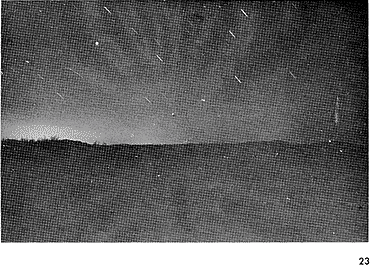
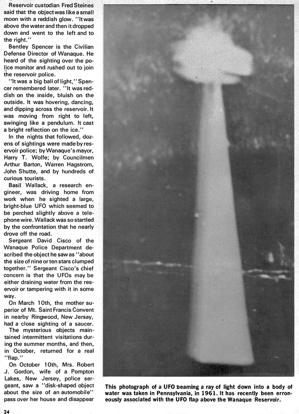
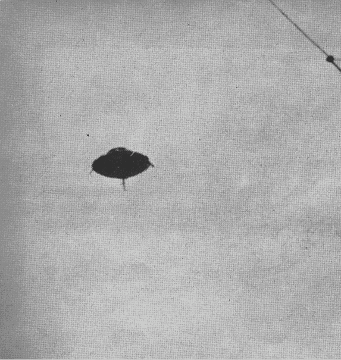
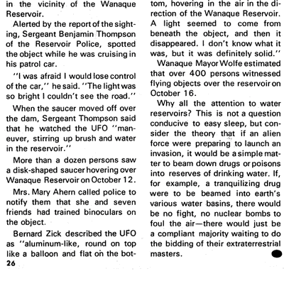

Varied flying saucer activity has been observed in and near Wanaque, New Jersey, especially over the Wanaque
Reservoir. Many researchers have long expressed concern over the saucers' interest in earth's water supplies, and it
has been suggested that the UFOs may in some way be tampering with Wanaque's six-mile-long reservoir, which is New
Jersey's largest storage basin.
One of the first sightings was made by Patrolman George Dykman on 1966-01-11.
There was a large, bright, white object over the north end of the dam, Patrolman Dykman said. It moved like
one of those low-flying private planes . . . that go over the reservoir once in a while, it looked about that high.
There was no sound to it . . . It seemed to be above the dam and then it moved west, below the top of the sam in my
line of sight.
Patrolman Dykman alerted other reservoir policemen, and they watched the UFO move over the dam in a circular motion,
then hover over the reservoir for several minutes. Later, as they watched, the object dipped down low over the
reservoir and cast a reflection on the ice. The next morning investigating officers found a circular hole that had
melted in the ice at the corresponding spot.
Selon August C. Roberts, l'objet luisant dans la section supérieure gauche de la photo
n'a aucune raison technique d'être là. Il est simplement apparu, est resté en l'air quelques minutes, puis
partit une fois de plus dans l'espace.

Le patrouilleur Dykman prévint d'autres policiers du réservoir, et ils regardèrent l'ovni survoler le réservoir dans
un mouvement circulaire, puis rester en l'air au-dessus du réservoir pendant plusieurs mn. Par la suite, alors qu'ils
regardaient, l'objet piqua bas au-dessus du réservoir et projeta un reflet sur la glace. Le matin suivant des
officiers enquêteurs découvrirent un trou circulaire qui avait fondu dans la glace à l'endroit correspondant.
Le gardien du réservoir Fred Steines dit que l'objet était comme une petite lune avec une teinte rougeâtre. C'était
au-dessus de l'eau puis c'est retombé et parti à gauche et à droite.
Cette photographie d'un ovni projetant un rayon de lumière dans un corps d'eau fut prise en Pennsylvanie,
en 1961. Elle a récemment été associée à tort à la vague d'ovnis au -dessus du réservori de Wanaque.

Bentley Spencer est le Directeur de la Défense Civile de Wanaque. Il a eut vent de l'observation par le biais de la
radio de la police et a foncé dehors pour rejoindre la police du réservoir.
It was a big ball of light, Spencer remembered later. It was reddish on the inside, bluish on the outside.
It was hovering, dancing, and dipping across the reservoir. It was moving from right to left, swinging like a
pendulum. It cast a bright reflection on the ice.
In the nights that followed, dozens of sightings were made by reservoir police; by Wanaque's mayor, Harry T. Wolfe;
by Councilmen Arthur Barton, Warren Hagstrom, John Shutte, and by hundreds of curious tourists.
Basil Wallack, a research engineer, was driving home from work when he sighted a large, bright-blue UFO which seemed
to be perched slightly above a telephone wire. Wallack was so startled by the confrontation that he nearly drove off
the road.
Sergeant David Cisco of the Wanaque Police Department described the object he saw as about the size of nine or ten
stars clumbed together. Sergeant Cisco's chief concern is that the UFOs may be either draining water from the
reservoir or tampering with it in some way.
On 03-10, the mother superior of Mt. Saint Francis Convent in nearby Ringwood, New Jersey, had a close sighting of a
saucer.
The mysterious objects maintained intermittent visitations during the summer months, and then, in October, returned
for a real "flap."
Bob Zanoti of WFMC radio (left), and Tom Sheridan and his wife check the portable radarscope which was loaned to
them by Wanaque mayor Harry T. Wolfe for use in "saucer spotting" over the reservoir. Patrolman George Dykman
of the Wanaque Reservoir Police made one of the initial sightings. He and others saw the UFO in the early evening of
January 11, 1966, over the Raymond Dam at the reservoir. According to Dykman, the saucer moved over the dam in a
circular motion, the hovered at a low altitude over the reservoir for several minutes. A circular hole in the ice
was later found at a corresponding spot. Sergeant David Cisco of the Wanaque Police Department has sighted
saucer activity over the reservoir. He has expressed concern that the UFOs might be draining water from the area. He
describes the object he saw as "about the size of 9 or 10 stars clumped together."
On 10-10, Mrs. Robert J. Gordon, wife of a Pompton Lakes, New Jersey, police sergeant, saw a disk-shaped object
about the size of an automobile pass over her house and disappear in the vicinity of the Wanaque Reservoir.
Alerted by the report of the sighting, Sergeant Benjamin Thompson of the Reservoir Police, spotted the object while
he was cruising in his patrol car.
I was afraid I would lose control of the car, he said. The light was so bright I couldn't see the road.
When the saucer moved off over the sam, Sergeant Thompson said that he watched the UFO maneuver, strirring up
brush and water in the reservoir.
Dernière page de l'article d'origine
 
More than a dozen persons saw a disk-shaped saucer hovering over Wanaque Reservoir on 10-12.
Mrs. Mary Ahem called police to notify them that she and seven friends had trained binoculars on the object.
Bernard Zick described the UFO as aluminium-like, round on top like a balloon and flat on the bottom, hovering in
the air in the direction of the Wanaque Reservoir. A light seemed to come from beneath the object, and then it
disappeared. I don't know what it was, but it was definitely solid.
Wanaque Mayor Wolfe estimated that over 400 persons witnessed flying objects over the reservoir on October 16.
Why all the attention to water reservoirs? This is not a question conducive to easy sleep, but consider the theory
that if an alien force were preparing to launch an invasion, it would be a simple matter to beam down drugs or poisons
into reserves of drinking water. If, for example, a tranquilizing drug were to be beamed into earth's various water
basins, there would be no fight, no nuclear bombs to foul the air—there would just be a compliant majority
waiting to do the bidding of the extraterrestrial masters.